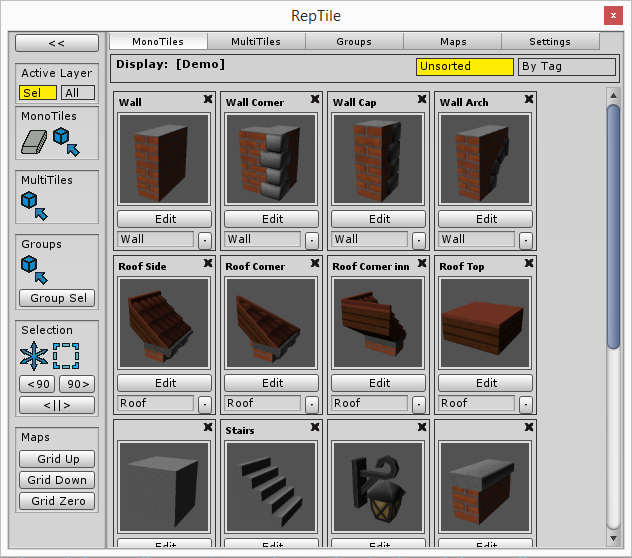

RepTile Documentation
Beta 1c
RepTile is a 3D grid-based level editor and framework. It provides editor tools for assembling layered maps from modular assets. It also provides a runtime API which exposes methods to inspect and modify the data stored in the maps it generates.
Please send any bug reports, questions, suggestions, or feature and API ideas to playTangent@proCore3d.com. Your feedback is will help make RepTile more robust and awesome.
1.Object Types
Definitions
Tile Objects
Tile Sets
Mono-Tiles
Multi-Tiles
Tile Groups
Maps
Prefab Anchors
2.RepTile Window
Palettes
MonoTiles Palette
MultiTiles Palette
Tile Groups Palette
Maps Palette
Settings Palette
Cursors
3.Appendix
Shortcuts
Rebuilding
API
Guts (under the hood)
4.FAQ
The terms and data types RepTile deals with.
The RepTile editor window. Accessed from the Unity toolbar under Tools/RepTile.
The RepTile window is comprised of a vertical control strip on the left, and a collapsible, tabbed palette menu on the right. The palettes on the right are used to manage the different objects that RepTile deals with, including user generated object Definitions, Maps, and Tile Sets. The control strip on the left mostly contains tools for interacting within the Scene View, including cursors, selection controls, and controls for the placement grid.
The left and right panes interact with each other. For example, selecting a Mono-Tile Definition in the right pane will automatically select the Mono-Tile Placement Cursor in the left control bar. The inverse will also happen.
These palettes are used to create, manage and edit user created definitions for objects that can be placed in a RepTile map. They feature a shared layout and similar controls, including individual menu items for each definition object.

Tile placement, erasing, grouping, selection, and moving is handled through cursors. A RepTile map must be in the scene for cursors to work. From there, just hold down the (Ctrl) key and use the mouse to operate in the scene. The cursor operates on the surface of the map grid.
Holding the (Shift) modifier in addition to (Ctrl) causes the cursor to perform a special ray-cast through the grid and position itself at the first occupied grid cell the ray-cast hits, or on the surface of the grid, if no occupied cell is hit. Depending on the cursor, this behavior may position the cursor directly on the occupied grid cell, or on the adjacent one in the direction from which the ray-cast is made. For placement cursors, a grid will be shown at the surface of the tile being cast against.
The top of the left menu bar contains a toggle for "Affected Layers". This is a global setting which determines whether the cursors respect only the layer selected in the Maps Tab, or all layers within the map. The (Shift) raycast only applies to the Affected Layers. So if "Affected Layers" is toggled to selected only, the ray-cast will ignore occupied grid cells in other layers.
Some cursors have a partner cursor. While a cursor that has a partner is selected, you can click (Ctrl+X) to swap to the partner cursor. The relationship may be one way. For example, if the Tile Placement Cursor is selected, clicking (Ctrl+X) will swap to the Eraser. Using the shortcut again will swap back to the Tile Placement Cursor. However, if the eraser is selected through the menu directly, using the shortcut will not swap to the Tile Placement Cursor. It's set up this way because more than one of the cursors are partnered with the eraser, but the eraser only swaps back to a partner when that partner has previously used the shortcut to swap to it. It's a matter of convenience and usability.
In RepTile, cursors are mainly used for in-map operations. For the most part, the same set of shortcuts is used across all of the different cursors.
| CTRL | makes the selected cursor active. Base for all hot-key combinations. |
| SHIFT | modifier which makes the in-scene cursors adhere to the nearest grid cell adjacent to an occupied grid cell. This allows you to paint Tile Objects onto the outside of previously built structures. The notable exception is the Selection Transform cursor, where holding down SHIFT while dragging the transform handle, duplicates the tiles contained within the selection volume and moves the copy instead of the originals. |
| CTRL+LeftArrow CTRL+RightArrow |
switch to next definition (prefab) in the palette. If the palette is set to 'tag' view, this shortcut selects the next definition belonging to the currently selected tag. |
| CTRL+X | swap to partner cursor |
| CTRL+Q CTRL+E |
rotate cursor |
| CTRL+J | flip cursor on grid aligned axis perpendicular to camera |
| CTRL+Insert | Toggles a cursor |
By default, maps automatically rebuild their tile collections whenever changes are made to definitions via the RepTile menu. Rebuilds are also performed when a RepTile.Map Monobehaviour initializes in-game. Any tiles derived from definitions which no longer exist are removed, as are any prefab-based tiles whose definitions no longer reference prefabs. Swapped prefabs are replaced and positions are refreshed to reflect updated prefab anchoring.
This way, maps always reflect the most current state of the tile definitions. Any tiles with missing definitions are removed from the map. But, this automatic rebuilding behavior could be undesirable if you've generated light maps, because the lightmapped objects would be removed and replaced with new instances. Two options are available for this reason. In the "Maps" tab of the RepTile menu, there is a "Strip Map" button, below the "Create Map" and "Delete Map" buttons. This button permanently removes RepTile components and functionality from the map selected in the palette. This option is good if you're just using RepTile for object placement and do not plan to use the API functions in your game. Keep in mind that once the RepTile data is stripped, this action cannot be undone.
If you do want to keep the RepTile data construct in place, but don't want the placed objects to be rebuilt, the map component's inspector contains a "Manual Rebuild" toggle. Checking this prevents automatic rebuilding from taking place, but leaves the RepTile functionality in place. This second option is non-destructive. Even in a build, the data will remain intact and the API functions can be used. Any changes to tile definitions will not be reflected in the map until this toggle is unchecked or unless you use the "Rebuild" button to force a manual rebuild.
RepTile exposes functions and classes that can be used in-game. The pool of available in-game functionality will grow as features are added and based on user feedback. All exposed types can be found under the namespace "RepTile" and the exposed methods are in the class "RepTile.Public".
Classes: namespace RepTile
| object | type | description | members |
|---|---|---|---|
| public struct | int3 | Type used for grid indices in RepTile. A three dimensional integer index | int x int y int z |
| public class | CastInfo | A class containing information about a RepTile rayCast against a map grid or tile collection. | bool hitSuccess Vector3 hitPoint int3 hitIndex |
Methods: RepTile.Public
| return type | method name | input arguments |
|---|---|---|
| CastInfo | GridCast() |
(Map map, Ray ray) (Map map, Vector3 rayOrigin, Vector3 rayDirection) |
Returns the result of a virtual ray-cast against the given map's placement grid. |
| CastInfo | TileCast() |
(Map map, Ray ray) (Map map, Ray ray, float cutoffDistance) (Map map, Ray ray, int layerIndex) (Map map, Ray ray, float cutoffDistance, int layerIndex) (Map map, Vector3 rayOrigin, Vector3 rayDirection) (Map map, Vector3 rayOrigin, Vector3 rayDirection, float cutoffDistance) (Map map, Vector3 rayOrigin, Vector3 rayDirection, int layerIndex) (Map map, Vector3 rayOrigin, Vector3 rayDirection, float cutoffDistance, int layerIndex) |
Returns the result of a virtual ray-cast against the tile collection. |
| CastInfo | CompoundCast() |
(Map map, Ray ray) (Map map, Ray ray, float cutoffDistance) (Map map, Ray ray, int layerIndex) (Map map, Ray ray, float cutoffDistance, int layerIndex) (Map map, Vector3 rayOrigin,Vector3 rayDirection) (Map map, Vector3 rayOrigin,Vector3 rayDirection, float cutoffDistance) (Map map, Vector3 rayOrigin,Vector3 rayDirection, int layerIndex) (Map map, Vector3 rayOrigin,Vector3 rayDirection, float cutoffDistance, int layerIndex) |
Returns the result of a virtul ray-cast against the given map's virtual grid AND tile collection, returning successful if it hits either one. |
| List<int3> | RemoveAtIndex() |
(Map map, int3 index) (Map map, int3 index, int layer) |
Removes a tile at the given index in the given layer. If no layer index is provided, tiles residing at this index are removed from all map layers. Returns an list of the occupied indices that were removed or an empty list if none were removed. |
| bool | CellOccupied() |
(Map map, int3 index) (Map map, int3 index, int layer) |
Given a map reference and a tile index returns true if any tiles occupy the index in any layer. An optional third parameter can be given to specify the layer to check. |
| GameObject | GetGameObjectAtIndex() | (Map map, int3 index, int layer) | Given a map reference, tile index and layer, return the GameObject of the tile at that index, if one exists there. |
| GameObject[] | GetGameObjectsAtIndex() | (Map map, int3 index) | Given a map reference and a tile index, returns the GameObjects of the tiles at that index in any layer, if any exist there. |
| int3 | VectorToIndex() | (Map map, Vector3 positionVector) | Given a map reference and a tile index returns true if any tiles occupy the index in any layer. An optional third parameter can be given to specify the layer to check. |
| Vector3 | IndexToVector() | (Map map, int3 index) | Given a map reference and an index, returns the. |
| Vector3 | IndexToCenterVector() | (Map map, int3 index) | Given a map reference and an index, returns center point in world space. |
| int3[] | GetContiguousIndices() | (Map map, int3 startIndex) | Given a map reference and a starting index, returns a list of the indices of all contiguous occupied grid cells connected to the starting index (if any). |
| List<List<int3>> | GetContiguousRegions() | (Map map) | Given a map, returns all separate contiguous regions of occupied grid cells as lists of their indices. |
| Vector3 | GetCenterOfMass() | (Map map) | Given a map, returns it's center of mass by averaging the positions of all of the indices of it's occupied grid cells. This is a convenience method. If you need to assign specific weight to different tile types, you would have to implement a center of mass calculation of your own. |
RepTile stores definitions for all of the different object types that it allows you to place in a RepTile map. This includes MonoTiles, MultiTiles, and TileGroups, with TileGroups simply being layered collections of the other RepTile objects. All of these definitions are sorted into named Tile Sets and stored on disk as Unity Assets. Each definition type gets its own Asset. The Asset is named "tile set name (specified by the user)" plus "definition type". For example a tile set named "Example" would save it's collection of MultiTile definitions into a file called "ExampleMultiTiles.asset".
When first created, members of a tile set are saved to a default "Resources" folder near the project root. Something like "Assets/RepTile/Resources/ExampleMultiTiles.asset". The reason these files are placed in "Resources" is because the tile sets need to be easily loadable in-game by the RepTile maps that use them. Once the definition collections are saved as asset files, they can be moved to a "Resources" folder of your choosing elsewhere in the project. RepTile will find them by name when it needs to load or save them, as long as they have the same relationship to the "Resources" folder that they are occupy as in the default location. So if the default location is "Assets/RepTile/Resources" you could move the asset files to a folder "Assets/MyExampleProjectStuff/Files/Resources" and RepTile should be able to load the tile set correctly.
If RepTile can't find a Tile Set to load, it will create a Default Tile set in the default location. If RepTile can find any file belonging to a named tile set, it will create and save the missing collections of other definition types.
The reason that separate files are used is so that at run-time, RepTile can omit loading collections of definitions which are only used by the editor. As of the Beta version, the only example of this is tile-groups, which are used to store organized sets of tile objects, but do not have an associated in-map Object type. They are only used in the editor, for placement of tile objects into maps. Because they are cubic arrays of objects, though, they can take up a lot of space, so they are not loaded at run-time.
It's likely that other definitions will be introduced in future RepTile releases that are treated in a way similar to groups.
Although you can create multiple Tile Sets, each RepTile Map may only be associated with one Tile Set. As of the Beta version, a Tile Set may only contain 255 definitions for each Definition type. The reason for this is because of how Maps work under the hood.
A Map contains a layered collection of Tile Objects and various functions for managing that collection. Tile Objects are data structures that represent Tile Definitions within a Map. They contain information necessary for proper object placement within the Map, such as rotation, scale flipping, and anchoring. They are correlated with Definitions in a tile set via the following ID system:
As described above, Tile Sets are collections of user generated Definitions. A Tile Set contains a hash table which stores Definitions indexed by GUID. The GUIDs insure uniqueness and good asset tracking in the editor, but they are too bulky to use efficiently in a Map because of the cubic number of objects that can be placed inside a Map. If each copy of a Tile Object contained a 16 Byte GUID, the memory load would get big quickly as Tile Objects are placed in the Map. So Tile Objects placed in the map contain a smaller ID instead, in the form of a single Byte. A byte stores 256 possible numbers, with 0 in this usage reserved for a special case.
All Layered Collections in RepTile (maps, groups, and the clipboard) all contain an ID map which correlates the small Byte IDs used in-map to the larger GUIDs used to index Definitions in Tile Sets. These ID Maps store a reference to the tile set, by name, and accumulate Pairings of Byte ID to GUID, as Tile Objects are added to the map. The correlations are refreshed and validated whenever the tile-set is re-loaded. This is done in order to clear uncorrelated Bytes as well as to remove any Tile Objects whose Definition references are obsolete at the time of rebuild. The freed up Bytes can then be re-assigned to new GUIDs as new objects are added to the Map.
This system may seem like it introduces unnecessary complexity, but it was the best way to address the two pronged issue of minimizing memory usage and creating unique Definitions.
To elaborate. It was possible to use Byte IDs across the board, but I opted not to extend the use of byte IDs to the Tile Sets because the Bytes are not unique. If a map were assembled using a given set of definitions and saved as a prefab, and afterward Tile Definitions were removed from the Tile Set and new Definitions were added to the Tile Set in their place, those new Definitions would occupy the previously used Byte IDs. Then, when the map is instantiated, the Tile Objects whose Definitions had been removed from the Tile Set would be replaced by Tile Objects generated from the Definitions which were added to the Tile Set under the same Byte ids. But, Under the ID Map system, when a map is loaded, it asks for it's Tile Set by name. The ID Map is then used to see if each GUID that is mapped to a Byte ID in the ID Map, still exists in the Tile Set. If it doesn't the Tile Objects under that Byte ID are removed from the Map, the association between the GUID and the Byte ID is dropped, and the Byte ID is freed up to be re-used.
Whenever a Map is loaded, it undergoes a full re-build. This means that RepTile attempts to re-load the Tile Set associated with that Map from a "Resources" folder, then checks the ID Map against the recovered Tile Set, and finally, Updates the in-map Tile Objects based on the current Definitions in the recovered Tile Set.